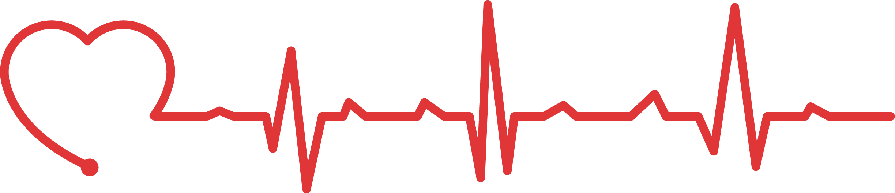

OneHeart

Humanitarian
Donate To Yemen
Since 2016, Yemen, the poorest country in the Middle East and North African region, has been in the midst of a civil war. In 2017, Yemen was declared the world’s largest humanitarian disaster by the United Nations. According to the UN, “An estimated 80 percent of the population — 24 million people — require some form of humanitarian or protection assistance, including 14.3 million who are in acute need. Severity of needs is deepening, with the number of people in acute need a staggering 27 percent higher than last year. Two-thirds of all districts in the country are already pre-famine." Children sleep at night hungry, and to the sounds of gunshots and bombs. The charities listed will send food and needed supplies to the people Yemen.
- Mercy Corps
- Mercy Corps exists to alleviate suffering, poverty and oppression by helping people build secure, productive and just communities.
Almost 87% of all it's expenses goes to charitable program,
Only $7 is spent to raise $100
In 2018 alone, they've spent almost $252 million on a number of causes around the world incuding Yemen.
- Relief International
- Relief Internationl delivers aid to people in fragile places on the edge of life.
$7.4 million was spent on vital services to people in 2019
86% of it's $140 million went to it's services
- International Rescue Committee
- The IRC helps people around the world to survive, recover and rebuild their lives
One of the most trustworthy charities in the world
More than 90% of it's spending serves the people in need
Founded by Albert Einstein in 1931.
Donate To Syria
Since the Syrian civil war officially began March 15, 2011, families have suffered under brutal conflict that has killed hundreds of thousands of people, torn the nation apart, and set back the standard of living by decades. Now in its 10th year, the Syrian refugee crisis is the largest refugee and displacement crisis of our time.
- Mercy Corps
- Mercy Corps exists to alleviate suffering, poverty and oppression by helping people build secure, productive and just communities.
Almost 87% of all it's expenses goes to charitable program,
Only $7 is spent to raise $100
In 2018 alone, they've spent almost $252 million on a number of causes around the world incuding Syria.
- Relief International
- Relief Internationl delivers aid to people in fragile places on the edge of life.
$7.4 million was spent on vital services to people in 2019
86% of it's $140 million went to it's services
- International Rescue Committee
- The IRC helps people around the world to survive, recover and rebuild their lives
One of the most trustworthy charities in the world
More than 90% of it's spending serves the people in need
Founded by Albert Einstein in 1931.
Donate To Congo
The Democratic Republic of the Congo (DRC) is facing one of the longest-standing and most complex humanitarian crises in the world. The country is simultaneously experiencing armed conflicts, food insecurity and recurring epidemics, including cholera, measles and the second-largest ever Ebola outbreak globally.
- Mercy Corps
- Mercy Corps exists to alleviate suffering, poverty and oppression by helping people build secure, productive and just communities.
Almost 87% of all it's expenses goes to charitable program,
Only $7 is spent to raise $100
In 2018 alone, they've spent almost $252 million on a number of causes around the world incuding Congo.
- Direct Relief
- Direct Relief works on the frontline to combat sickness and disease all around the world
In the last decade, they've provided Congo with $20 million,
92,000 pounds of medicine and supplies,
9 million doses of medicine.
- International Rescue Committee
- The IRC helps people around the world to survive, recover and rebuild their lives
One of the most trustworthy charities in the world
More than 90% of it's spending serves the people in need
Founded by Albert Einstein in 1931.